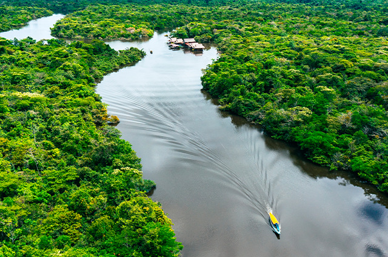
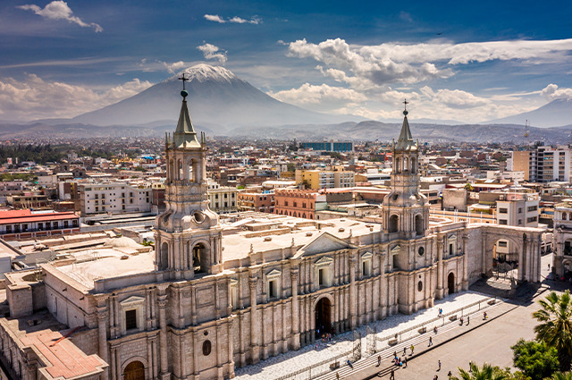
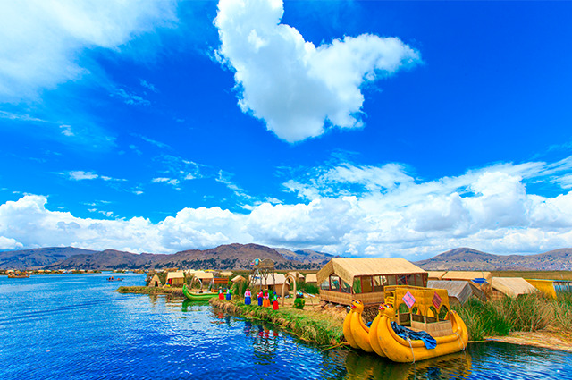

Iquitos es una ciudad peruana ubicada en la región Loreto, conocida como la "Puerta de la Amazonía" por su ubicación geográfica en el corazón de la selva amazónica. Es la ciudad más grande del mundo inaccesible por carretera, conectada principalmente por vía fluvial y aérea.Destaca por su vibrante escena musical, representada por grupos como Explosión de Iquitos, que fusionan ritmos locales con estilos modernos. Este grupo ha realizado conciertos en ciudades como Tarapoto, Pucallpa y Lima, destacando su energía en presentaciones como el Carnaval de Pucallpa 2024 y eventos en Piura.
Ubicación
Machu Picchu es una ciudadela inca del siglo XV ubicada en los Andes peruanos, declarada Patrimonio de la Humanidad (1983) y una de las 7 Maravillas del Mundo Moderno (2007). Su nombre original se desconoce, pero se cree que fue una residencia imperial y centro ceremonial construido durante el reinado de Pachacútec, emperador que expandió el Imperio Inca. Destaca por su ingeniería inca: bloques de piedra tallados sin mortero, sistemas de drenaje y terrazas agrícolas que adaptan la estructura al relieve montañoso. Aunque su función exacta sigue siendo un misterio, se especula que fue un santuario sagrado o lugar de iniciación de sacerdotes.

El Lago Titicaca, ubicado en los Andes centrales entre Perú y Bolivia, es el lago navegable más alto del mundo (3,812 msnm). Con una superficie de 8,372 km² (56% en Perú y 44% en Bolivia), destaca por su profundidad máxima de 281 metros y su importancia cultural como origen mítico del cosmos inca. Dividido en dos cuerpos de agua por el estrecho de Tiquina, con aguas dulces y fluctuaciones estacionales en su nivel. Además, Alberga especies como la rana gigante del Titicaca (Telmatobius) y peces endémicos como el Orestias.
Conocida como la ciudad blanca, Arequipa es uno de los lugares más hermosos de Perú, con sus casas de piedra volcánica blanca, que junto al casco histórico fueron declarados Patrimonio de la Humanidad por la UNESCO. Puedes conocer la Plaza de Armas, la Catedral de Arequipa, la más grande e importante de la ciudad, la iglesia de La Compañía, el Monasterio de Santa Catalina entre otros. Además, Arequipa tiene una ubicación bastante estratégica, ya que está cerca de Cusco, así como la ruta para quienes cruzan la frontera con Chile.
El Oasis de Huacachina se encuentra a unos 5 kilómetros de la ciudad de Ica, en medio del desierto costero. En el destino puedes disfrutar de muchas actividades, como un paseo en buggy por el desierto y el sandboarding en sus dunas. También vale la pena ver la puesta de sol sobre el oasis. En los alrededores del oasis hay otras atracciones que puedes disfrutar, como islas, área de reserva, bodegas, museos, cañones y mucho más. Como los días allá siempre son soleados, puedes visitar el destino en cualquier época del año.
El Valle Sagrado está situado al noreste de Cusco, a una altitud de 2.000 a 2.800 metros sobre el nivel del mar, entre las poblaciones de Pisac y Ollantaytambo. Encontrarás hermosas vistas de montañas, lagunas turquesas y mucho más. El Valle Sagrado de los Incas está compuesto por 14 ciudades y pueblos, pero los recorridos suelen consistir en Pisac, Ollantaytambo y Chinchero. Puedes disfrutar de caminatas en la laguna de Piuray, conocer la historia antropológica en el Museo Inkari y aprender sobre las tradiciones del lugar en las diversas comunidades de Lamay.